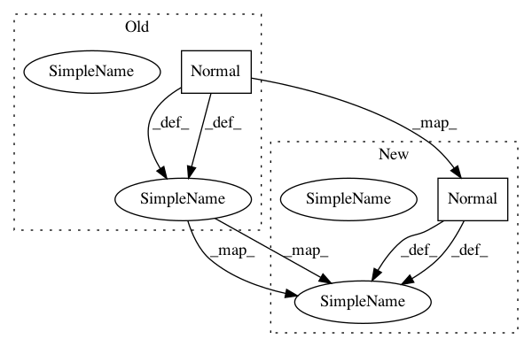

e27bd53c38aefc3e544944ec5b3a4ec340471c01,chainercv/links/model/faster_rcnn/faster_rcnn_vgg.py,FasterRCNNVGG16,__init__,#FasterRCNNVGG16#,79
Before Change
else:
vgg_kwargs = {}
bbox_kwargs = {"initialW": chainer.initializers.Normal(0.001)}
score_kwargs = {"initialW": chainer.initializers.Normal(0.01)}
feature = VGG16FeatureExtractor(vgg_kwargs)
rpn = RegionProposalNetwork(
512, 512,
ratios=ratios,
anchor_scales=anchor_scales,
feat_stride=self.feat_stride,
proposal_creator_params=proposal_creator_params,
)
head = VGG16RoIPoolingHead(
n_class,
roi_size=7, spatial_scale=1. / self.feat_stride,
vgg_kwargs=vgg_kwargs,
After Change
if loc_initialW is None:
loc_initialW = chainer.initializers.Normal(0.001)
if score_initialW is None:
score_initialW = chainer.initializers.Normal(0.01)
if rpn_initialW is None:
rpn_initialW = chainer.initializers.Normal(0.01)
if vgg_initialW is None and pretrained_model:
vgg_initialW = chainer.initializers.constant.Zero()
feature = VGG16FeatureExtractor(initialW=vgg_initialW)
rpn = RegionProposalNetwork(
512, 512,
ratios=ratios,
anchor_scales=anchor_scales,
feat_stride=self.feat_stride,
initialW=rpn_initialW,
proposal_creator_params=proposal_creator_params,
)
head = VGG16RoIPoolingHead(
n_class,
roi_size=7, spatial_scale=1. / self.feat_stride,
vgg_initialW=vgg_initialW,
In pattern: SUPERPATTERN
Frequency: 4
Non-data size: 2
Instances
Project Name: chainer/chainercv
Commit Name: e27bd53c38aefc3e544944ec5b3a4ec340471c01
Time: 2017-05-18
Author: yuyuniitani@gmail.com
File Name: chainercv/links/model/faster_rcnn/faster_rcnn_vgg.py
Class Name: FasterRCNNVGG16
Method Name: __init__
Project Name: chainer/chainercv
Commit Name: 4ab172c8c9cf8a36288c43b059f4b8bfd9fcac55
Time: 2017-05-15
Author: yuyuniitani@gmail.com
File Name: chainercv/links/model/faster_rcnn/faster_rcnn_vgg.py
Class Name: FasterRCNNVGG16
Method Name: __init__